GoTu · Pre-Workshop Experience
The Mirror experience GoTu will go through, start to finish
A screen-by-screen preview · June 2026
“Mirror” is our name for this guided AI-readiness experience. In the week before GoTu's live workshop, each member of GoTu's team goes through it on their own. One person opens a link, has a voice-or-typed conversation with an AI interviewer, and walks away with a personal written report. This is the whole journey, in order — every screen, with a plain-English note on what's happening and why it matters. Read it top to bottom like a storyboard. A short, honest note on what's finished versus still in draft sits near the end, in one place.
Chapter 1
Arrival & setup
The first thing a participant sees, and the two quick steps they clear before the conversation starts.
The welcome screen
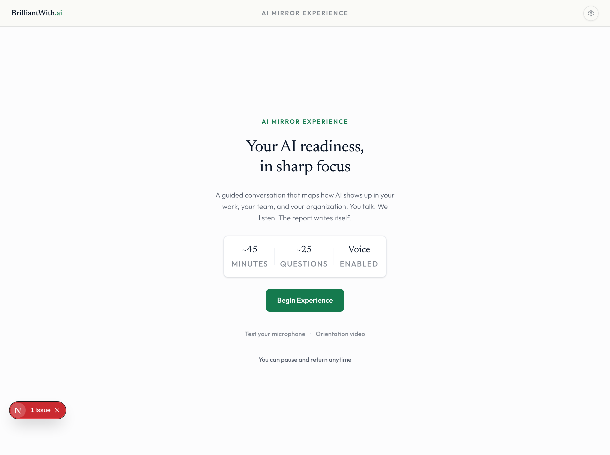
The front door. A single, calm promise — “Your AI readiness, in sharp focus” — with the commitment stated up front: 45–60 minutes, about 25 questions, voice-enabled. One green Begin Experience button, and a quiet reassurance that they can pause and come back. The job of this screen is to set expectations and lower the stakes before anyone starts talking.
Set up your microphone
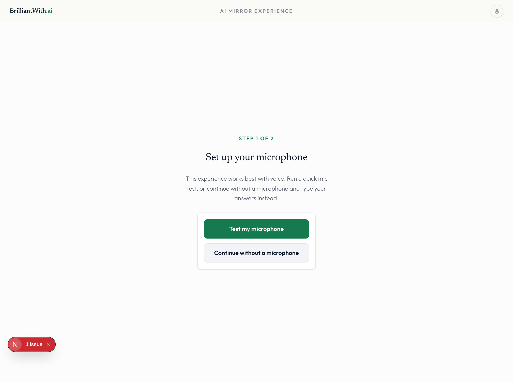
Because the experience works best spoken aloud, we ask people to get their mic working first — step one of two. They can run a quick mic test, or skip it and type their answers instead. Nobody is forced to use voice; we just make sure the option works before the conversation, not in the middle of it.
Watch this before you begin
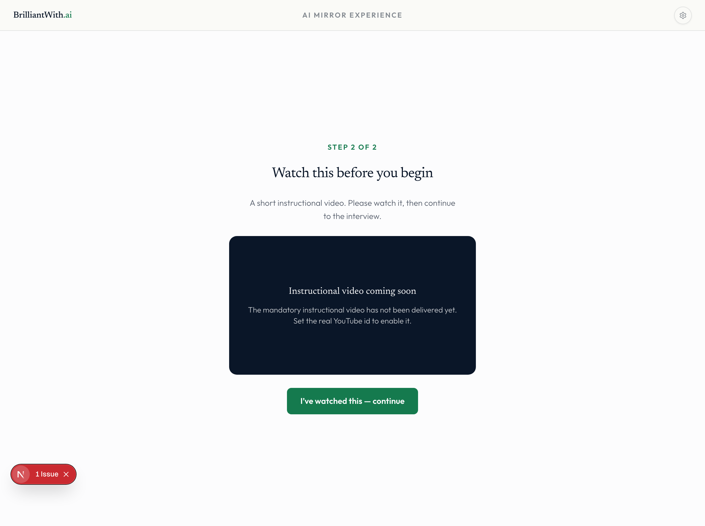
Step two: a short orientation video that frames what the experience is and how to get the most from it. People watch it, then click “I've watched this — continue.” This mic-and-video pair is a deliberate gate — clearing both is what gets everyone to the conversation on the same footing.
Chapter 2
The interview
A few basic details, then the heart of the experience: a conversation with an AI interviewer.
The intake form
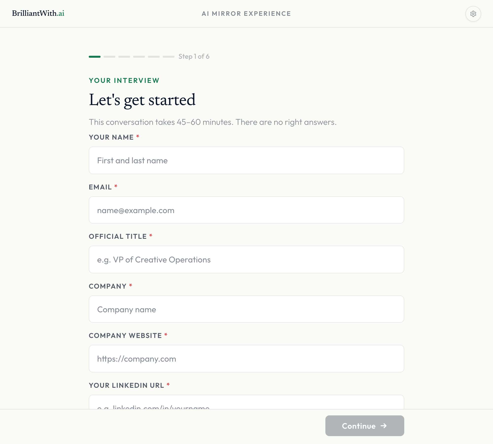
Before the conversation, a form collects the basics — name, email, title, company, website — plus a few framing details: your LinkedIn, who you report to, and whether you manage a team. Eight fields in all, each required. The progress marker (“Step 1 of 6”) tells people roughly how far in they are, the timing line reads 45–60 minutes to match the welcome screen, and “there are no right answers” sets the tone for what's coming. We carry one sample person through the rest of this walkthrough — Priya Raman, VP of Marketing at Northwind Retail Group — and the next screen shows the same form in her hands.
The form, filled in
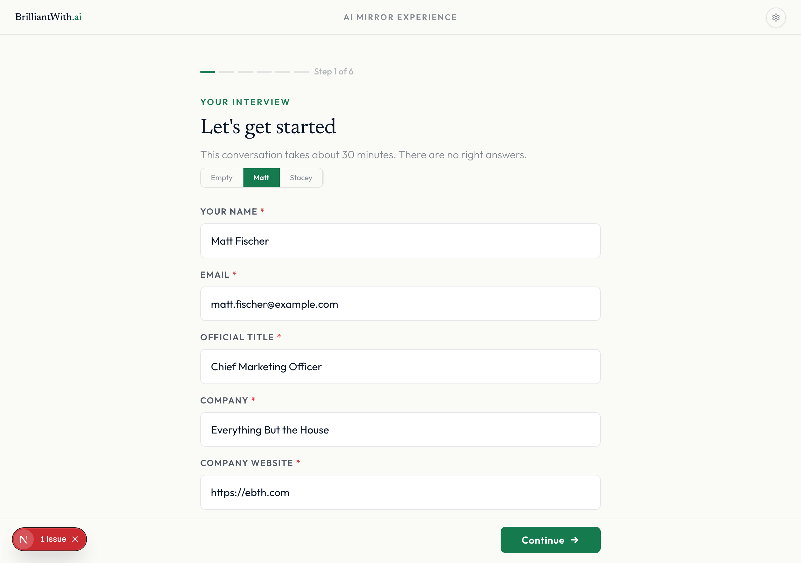
The same form, complete — filled in as Priya Raman. With the required fields in, the Continue button turns green and active, and Priya moves into the conversation itself.
The conversation begins
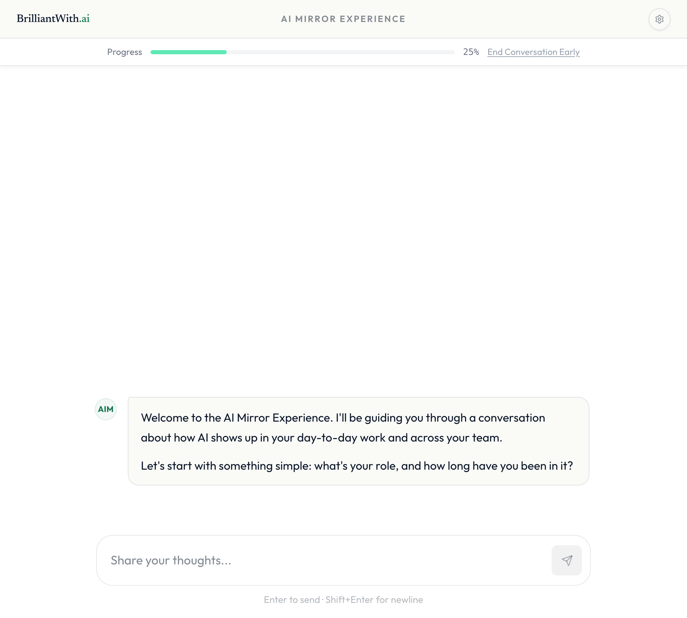
The interview is a chat. A progress bar runs along the top so people always know how far along they are — it tracks phases of the conversation, not a question count, so it already reads 25% on the first question. The AI interviewer opens the conversation; it signs its messages “AIM” — short for AI Mirror. A simple reply box sits at the bottom — type or speak. It looks and behaves like a familiar messaging thread, which is the point: almost no learning curve.
The shape of the conversation
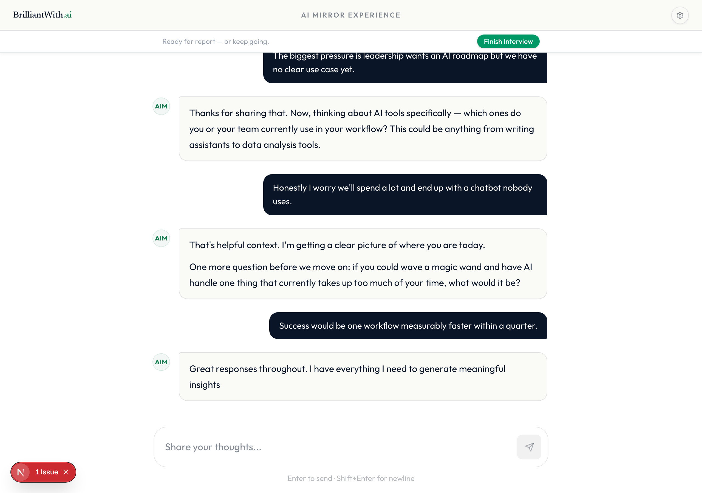
A few turns in. Priya's answers are the dark bubbles, the interviewer's are the light ones, and the progress bar keeps climbing. This preview shows only a few representative turns — the live interview runs the full ~25 questions, which is why the bar here jumps ahead quickly. These frames show the shape of the exchange — how turns alternate, how the thread reads, how progress is paced. The interviewer's intelligence — listening, reflecting back, asking a sharper follow-up — is what the live AI does in a real session, and it's judged on its own, separately from this preview.
Finishing the interview
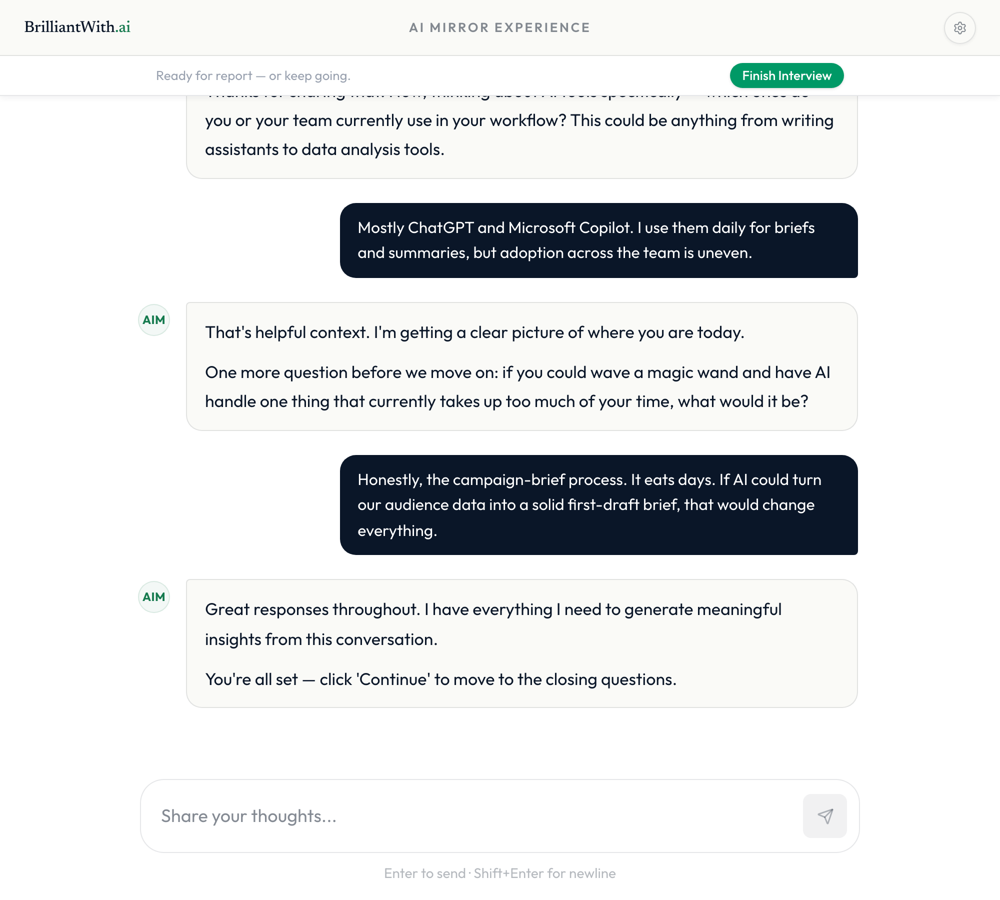
When the interviewer has what it needs, it says so, and a Finish Interview button appears — the clean hand-off from the interview to the wrap-up.
Chapter 3
Wrapping up
One last reflective moment before the report is generated.
Closing questions
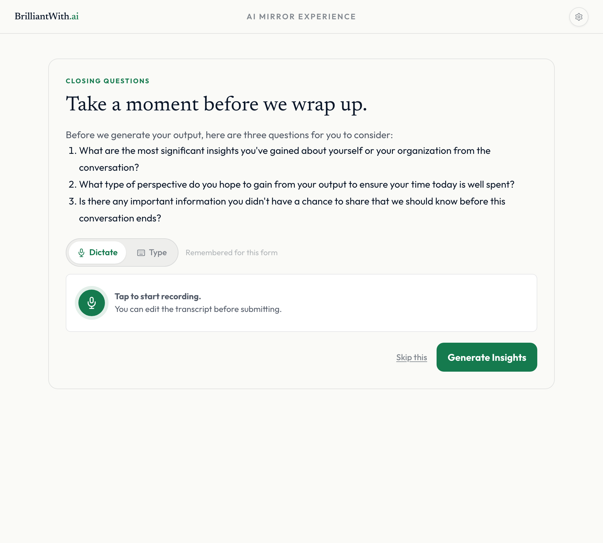
Before generating anything, the experience asks three short reflective questions — what stood out, what they hope to get from this, anything they didn't get to say. People can speak or type their answers, or skip. It's a deliberate pause that lets someone add their own framing before the machine has the last word, and it gives the report richer material to work from.
Chapter 4
The payoff: insights & report
The reward for the conversation — a crisp insights snapshot and a longer personal report they can read, reply to, and take with them. The two live on one scrolling page, so the snapshot stays in reach as you move through the report.
The insights snapshot
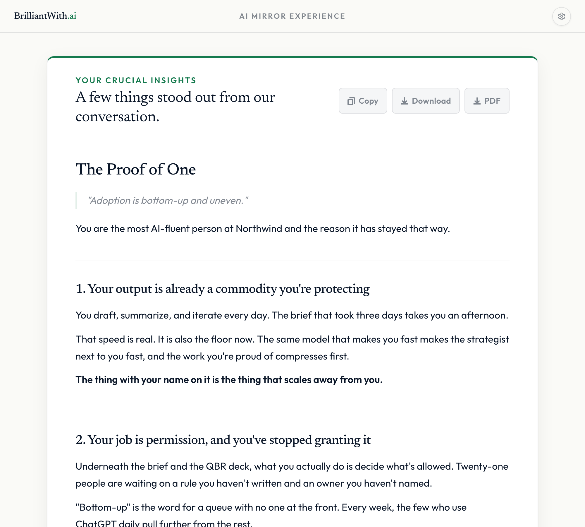
The first payoff arrives quickly: a tight, scannable “Your Crucial Insights” snapshot that names a few things that stood out from the conversation, with Copy / Download / PDF right at the top. Below it, on the same screen, sits a short follow-up panel where the person can ask about what they're seeing. This is the immediate “that was worth it” moment.
The report
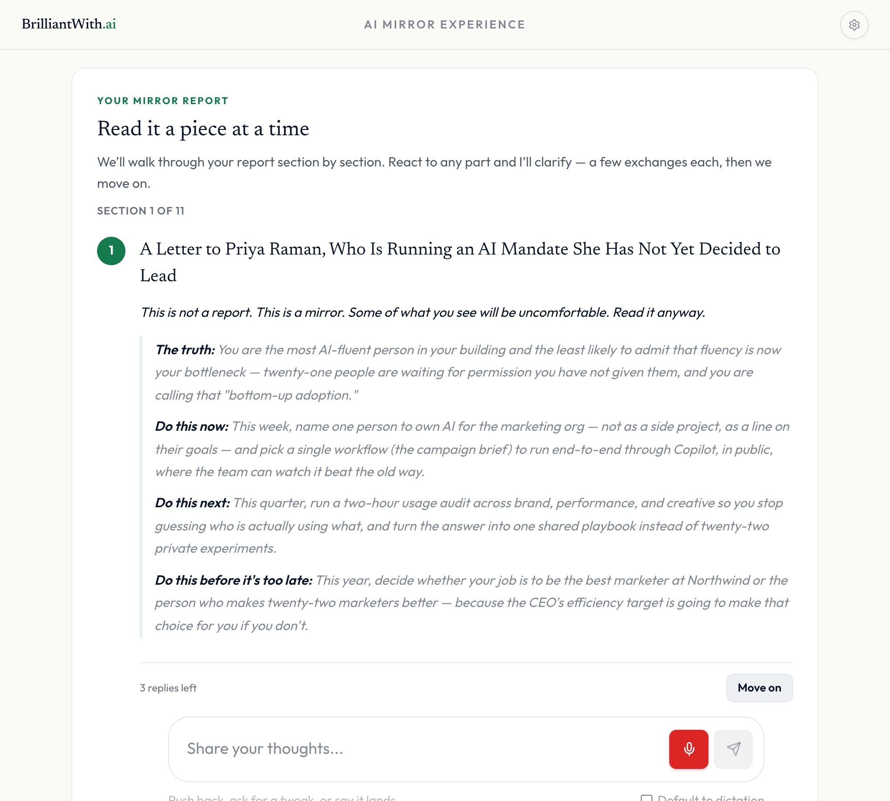
Then the longer, more personal report. Rather than dumping a wall of text, it's revealed one section at a time (here, “Section 1 of 11”). The person reads a piece, can reply to it in the box at the bottom — “3 replies left,” voice or typed — then continues to the next. Every panel carries Copy / Download / PDF, so the whole report can be saved or shared. The pacing keeps a substantial document from feeling overwhelming, and the reply box makes it something you can talk back to and take with you — not a dead-end hand-off.
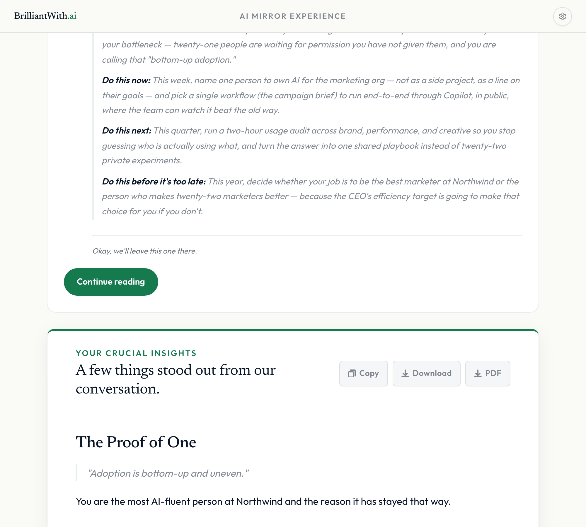
Chapter 5
The close
How the pre-workshop journey ends — and the one thing deliberately held back for the workshop.
Thanks — your Mirror is complete
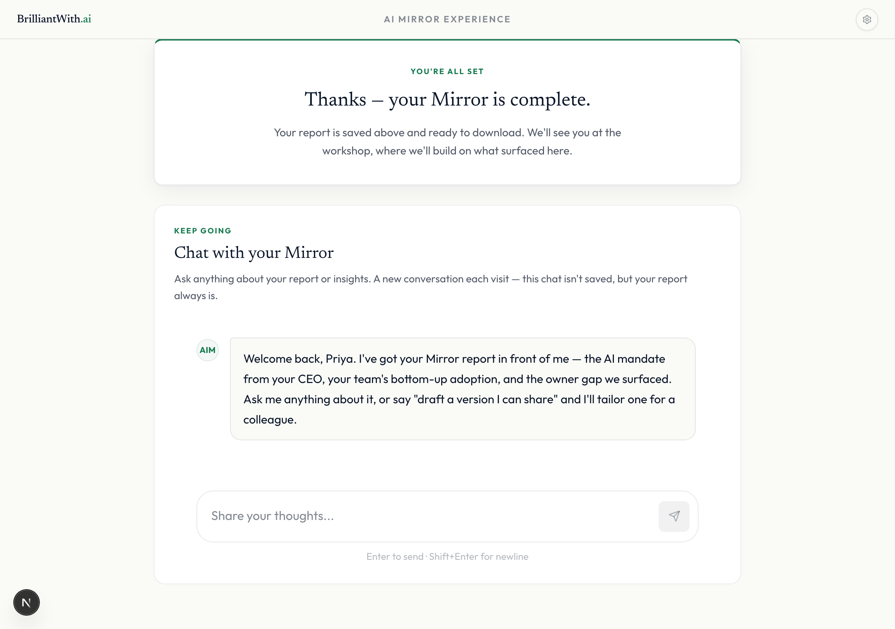
The closing screen, headed “Thanks — your Mirror is complete.” It confirms the report is saved and ready, then hands off to the live event: “We'll see you at the workshop, where we'll build on what surfaced here.” A “chat with your Mirror” box stays available so people can keep asking questions on later visits. This is where the pre-work cleanly ends and the in-person session is set up to begin.
Detail: the report ends here, with no action-plan section
Same close, fuller view
For GoTu, the deeper, do-this-next action plan is held back for the live workshop. The report gives people genuine insight; the workshop is where that insight turns into a concrete plan. The action plan is absent here by design. (What that held-back action plan looks like, for the team's reference, is in the technical appendix below.)
Before the workshop
What's real, and what's still in draft
One honest pass, in one place. Everything you just walked through is the real, in-order experience; a few pieces are still being finished, and they're listed here so the draft can be sized up at a glance.
| Element | Status | What that means |
|---|---|---|
| The end-to-end flow & every screen | Real | These are the actual production screens, driven start-to-finish in the correct order. The journey is genuine. |
| The forced mic + orientation-video gate | Real | The two required setup steps work, and the video step now plays the current orientation cut. The final cut of that video may still change. |
| Copy on the closing screen & report | Draft wording | The structure and behavior are settled; the exact sentences are draft copy awaiting final sign-off and will likely change. |
| This assembled build | Not yet live | It stitches together work from separate streams into one preview. It is not yet merged or running in production. |
| The AI's live interview & report quality | Tested separately | This preview was driven with sample answers and the AI's live thinking switched off, so it proves the journey, not the quality of the live conversation or writing. That is measured on its own. |
Technical appendix (for the team)
Kept out of the main narrative on purpose. This maps the participant-facing screens above to the underlying work, for anyone who needs to trace the build. (“P0” below is shorthand for the first-cut scope — the smallest version that proves the GoTu ending end to end. The forced mic + orientation-video gate is part of that scope.)
How the preview was produced. The pieces of this experience were built in separate streams of work and assembled into a single build for this preview. One sample person — “Priya Raman, Northwind Retail Group” — was walked through it from the first screen to the last, so the intake form, interview, insights, and report all carry the same identity. It ran in mock mode: the real production screens, fed with sample answers and with the AI's live thinking switched off rather than running. That proves the journey — every screen, in order, and how it flows — without waiting on live inference, and it deliberately does not exercise the quality of the live questions or report.
| Experience step | Underlying work | Notes |
|---|---|---|
| Forced mic + video intake gate (screens 02–03) | Progressive-start gate (bapps#772) | Gate is a completion requirement, not a pass/fail. Video panel plays the current orientation video; the final cut may still change. |
| Interview chat & adaptive turns (screens 06–08) |
Mirror interview runtime on @bwai/chat-engine +
@bwai/platform-client
|
Per-turn control via structured data envelope
(DEV-245). Mock mode bypasses live inference.
|
| Closing questions (screen 09) | Closing-questions step in the interview flow | Dictate-or-type; feeds the report generator. |
| Insights snapshot (screen 10) | Insights snapshot surface | Copy / Download / PDF + follow-up dialogue panel. |
| Sectioned report + reply (screen 11) | Mirror Report v2, progressive disclosure | 11 sections; capped reply count; product-default ChatInput. |
| Terminal / workshop close (screens 12–13) | GoTu terminal screen + P0 action-plan withhold | Placeholder copy pending sign-off. Report correctly omits the action plan; the standalone action-plan screen is switched off and unreachable for GoTu. |
The held-back action plan, for reference. For GoTu, the action plan is withheld — the report stops at the close (screen 13 confirms this). For completeness, below is what the standalone action-plan surface looks like when it is shown: a short list of concrete next steps a person can check off, plus options to share a version with a manager or a peer.
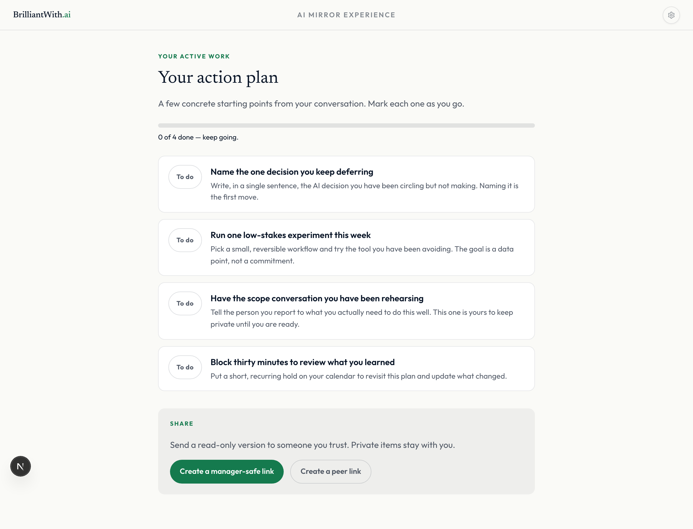
A GoTu participant never reaches this screen. In a real GoTu deployment it is switched off and unreachable, and — as screen 13 shows — the report itself stops before the action plan. Treat this purely as an internal reference, not part of what a GoTu participant sees.